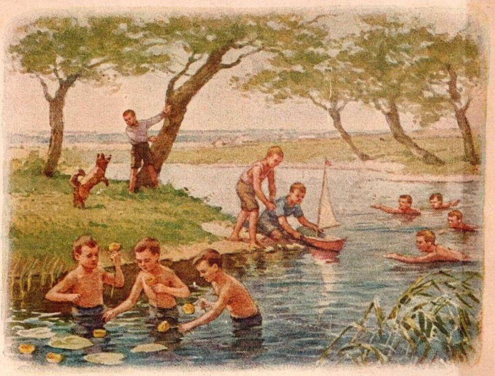
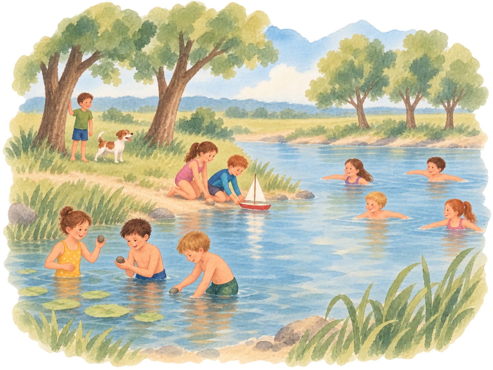
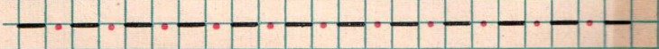
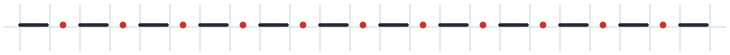
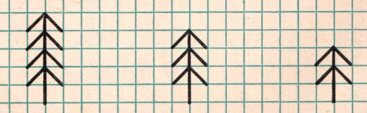
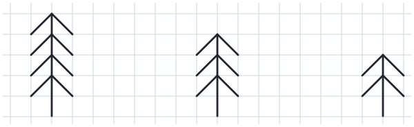
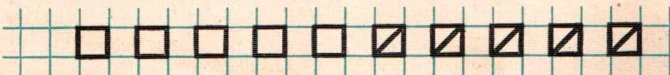
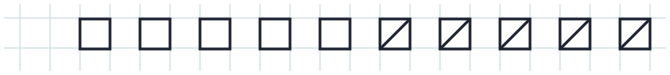

Страница 4 · было / стало
Сцена у реки сохраняет счёт; три небольших образца для рисования переведены в чистый вектор.
Дети у реки
10 детей в четырёх группах · 5 деревьев · 1 собака · 1 лодочка


Чёрточки и красные точки


Три ёлочки


Десять квадратов

